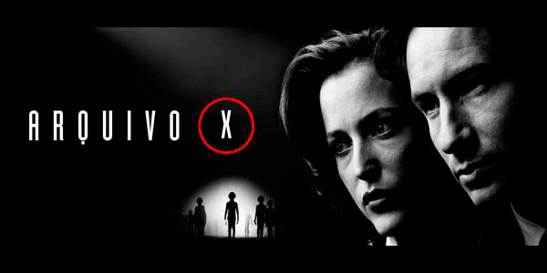
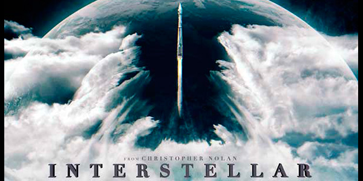

Hobbies
Série Starcraft
Acompanhei a série Starcraft desde o seu início. Gosto muito da história do jogo, a qual daria uma ótima sequência de filmes. Jogava 1x1 online, porém não tive muita paciência para melhorar meu ranking, ainda mais depois que iniciaram os 'resets' de tempos em tempos.
Série Warcraft
Desde criança sempre joguei os RPGs "raiz" da Blizzard, incluindo a série WARCRAFT.Costumava jogar os mapas customizáveis desse game, incluindo entre eles Tower Defences, Hero Defences e inclusive as primeiras versões do Dota 1.
Kerbal Space Program

Ótimo jogo que simula a física relacionada ao lançamento de foguetes e o desenvolvimento de dispositivos mecânicos. Até cogitei iniciar uma stream pela twitch.tv sobre este jogo, no entanto minha configuração atual de placa de vídeo não iria permitir uma qualidade relativamente alta dos gráficos. Indico os vídeos do canal 'Jovem Nerd' sobre a missão de resgate ao astronauta Jebediah!
DOTA 1 e DOTA 2
Acompanhei todo o desenvolvimento do Dota 1 desde seu início na BattleNet, passando pelo Garena e indo para o RGC. Participei do beta do Dota 2 deste 2012. Atualmente auxilio na moderação de alguns canais twitch.tv de dota durante meu tempo livre. Possível verificar meu rendimento relativo a época em que jogava no site dotabuff pelo nick Iquorra. Não confio no sistema de rankeamento deste jogo.
D&D 3.5 e 5.0
Gosto de acompanhar twitchs.tv do gênero RPG de mesa, tendo participado de alguns jogos de D&d 3.5. Ainda não tive oportunidade de participar de uma mesa 'física' de rpg... tendo jogado apenas pelo sistema do site roll20 que permite que os jogadores consigam se comunicar pelo próprio site e também disponibilizando ferramentas para a criação de tabuleiros, fichas de personagens e rolamento dos dados.
Arquivo X

Sempre gostei de assuntos ligados ao tema 'sobrenatural' e 'conspiratórios'. Acompanhei durante a década de 90 o desenrolar desta série e aguardo ansiosamente pela 11ª Temporada que deve sair em 2018. Neste seriado, os agentes do FBI, Fox Mulder e Dana Scully conduzem as investigações de um departamento designado apenas para casos sem soluções 'convencionais', os chamados Arquivos X.
Série Cosmos
Gostava de assistir a série Cosmos original realizada pelo cientista Carl Sagan e sua esposa Ann Druyan. Filmada na década de 80, esta série contava com 13 episódios de uma hora cada. Neles eram apresentados conceitos científicos com o intuito de divulgar os desenvolvimentos tecnológicos.
2001 Uma Odisseia no Espaço
Ótimo filme que foi lançado em 1968 antes mesmo dos seres humanos irem até a lua em 1969. Dirigido pelo renomado diretor Stanley Kubrick e baseado na obra de Arthur C. Clarke. Os teóricos da conspiração cogitam que o governo dos Estados Unidos tenha utilizado os sets de filmagem deste filme para forjar a aterrissagem do homem na lua.
Tron O Legado
Sempre fui fã de ficção cientifica e achei muito interessante os conceitos apresentados neste filme. Também gosto do primeiro filme da série Tron, no entanto acho que os personagens se tornaram mais interessantes apenas nesta sequência lançada em 2010. Assim como inúmeros fãs, estou na expectativa do lançamento de uma continuação que vem sendo anunciada para logo em seguida ser cancelada pelos estúdios Disney.
Interstelar

Outro ótimo filme de ficção cientifica onde o planeta Terra já não consegue mais suportar a vida humana e os cientistas são obrigados a encontrar um novo planeta para a civilização. O filme tenta simplificar a apresentação de conceitos complicados como 'buracos negros' e as aplicações dos efeitos da teoria da relatividade sobre a dinâmica temporal.
A. Clarke / Carl S. / E.V.Daniken / R. Dawkins
Da esquerda para direita: Arthur C. Clarke e Carl Sagan são ótimos escritores de ficção científica. Von Daniken escreveu o famoso livro 'Eram os Deuses Astronautas' e Richard Dawkins é um dos principais biólogos propagando a defesa da teoria evolucionaria por meio de livros como 'Deus um Delírio'.